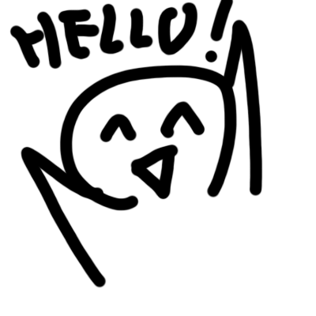
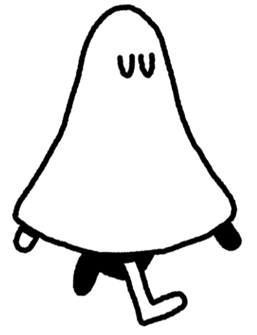

-memo-
(누르면 메모 꺼짐)
1. 테스트칼라 #d3d , #3d3
2. 화면 전환은 테스트용으로 1초 고정(변경가능)
3. 테스트 이미지들 사용(hello)
4. 맨 처음에 이상하게 보이는건 나중에 해결가능
(누르면 메모 꺼짐)
1. 테스트칼라 #d3d , #3d3
2. 화면 전환은 테스트용으로 1초 고정(변경가능)
3. 테스트 이미지들 사용(hello)
4. 맨 처음에 이상하게 보이는건 나중에 해결가능
메모켜기
LOGO

Full HD에 최적화되어 있습니다.
인간의 본성은 태어날 때 텅 비어있는 ‘백지’와 같습니다.
인간의 본성은 생득적으로 주어진 것이 아니라, 정의될 수 없는 가변적인 것입니다.
우리는 아침에 눈을 뜨는 순간부터 선택을 하기 시작합니다.
아침으로 무엇을 먹을까? 어떤 옷을 입을까? 대개는 매우 사소한 결정들입니다.
하지만 이따금 정말 중요한 결정이 평생을 따라다니며 영향을 미치기도 합니다.
어떠한 선택이 최선일지, 가장 가치 있을지, 가장 즐거울지는 미리 알 수 없습니다.
좀 더 탁월하거나 위태로운 선택이 있을 뿐, 완벽한 선택이란 없습니다.
삶의 방향을 정하고 자신이 누구인지 규정하여 자신만의 원칙으로 더욱 바람직한 결정을 내리시길 바랍니다.
내 인생 첫번째 선택을 시작하세요. 아래 다섯 가지의 돌잡이 물건 중 하나를 선택하세요.
인간의 본성은 생득적으로 주어진 것이 아니라, 정의될 수 없는 가변적인 것입니다.
우리는 아침에 눈을 뜨는 순간부터 선택을 하기 시작합니다.
아침으로 무엇을 먹을까? 어떤 옷을 입을까? 대개는 매우 사소한 결정들입니다.
하지만 이따금 정말 중요한 결정이 평생을 따라다니며 영향을 미치기도 합니다.
어떠한 선택이 최선일지, 가장 가치 있을지, 가장 즐거울지는 미리 알 수 없습니다.
좀 더 탁월하거나 위태로운 선택이 있을 뿐, 완벽한 선택이란 없습니다.
삶의 방향을 정하고 자신이 누구인지 규정하여 자신만의 원칙으로 더욱 바람직한 결정을 내리시길 바랍니다.
내 인생 첫번째 선택을 시작하세요. 아래 다섯 가지의 돌잡이 물건 중 하나를 선택하세요.
평소 나를 괴롭히던 힘이 쎈 녀석이 있다.
그 녀석의 절도 행위를 목격하였다.
나인간 당신은 어떻게 할 것인가?
그 녀석의 절도 행위를 목격하였다.
나인간 당신은 어떻게 할 것인가?
그 녀석이 도로 돌려놓게 한다
그 사실을 못본척한다.
나인간 당신은 변호사로서의 생을 마감하였습니다.
삶을 살아가며 선택을 통해 운명을 바꾸며 나아가는 것은 순전히 자신의 자유의지에 달려있습니다.
운명이 정해진 길을 따라가는 것이라면, 선택은 정해진 길이 아니라 자의적으로 결정하는 것입니다.
합리적인 선택이 운명에 포함되는 것이 아닐까 하는 생각이 들기도 하지만,
운명과 선택은 서로 교차하며 비슷한 의미와 함께 반대 의미도 담고 있습니다.
인간의 본성은 생득적으로 주어진 것이 아니라 정의될 수 없는 가변적 입니다.
사람의 운명은 ‘선택’에 따라 달라질 수 있는 것일까요.
그렇기에 현명하게 선택하는 것이 중요합니다.

자, 이제 저승으로 가아합니다.
가기 전, 당신의 인생살이 속 10번의 선택을 판결하여
당신이 선인인지, 악인인지 재판하겠습니다.
당신이 변호사로서 살았던 삶을 한 번 되돌아보세요.
가기 전, 당신의 인생살이 속 10번의 선택을 판결하여
당신이 선인인지, 악인인지 재판하겠습니다.
당신이 변호사로서 살았던 삶을 한 번 되돌아보세요.
재판 중입니다....
저승에는 총 다섯 종류의 지옥에 해당하는 저승 조항들이 있습니다.
첫번째, 이기심에 눈이 멀어 생전에 너그럽지 못했거나 베풀지 않은 자가 가게 되는 맹지옥.
두번째, 자신의 양심을 속여 그 마음을 얼어붙게 만든 자가 가게 되는 빙지옥.
세번째, 받은 만큼 돌려주지 않고 남을 속여 이득을 취한 자가 가게 되는 거지옥.
네번째, 두려움에 맞서 약자를 구해주지 않고 외면해 버린 자가 가게 되는 용지옥.
다섯번째, 야망에 불타 평정심을 잃고 양심을 버린 자가 가게 되는 불지옥.
나인간 당신은 이 모든 저승조항을 통과하셨습니다.
당신에게는 새로운 삶을 살 수 있는 기회를 드리겠습니다.
다음 생의 수많은 갈등 상황 속에서도 후회없는 선택들을 하시길 바랍니다.